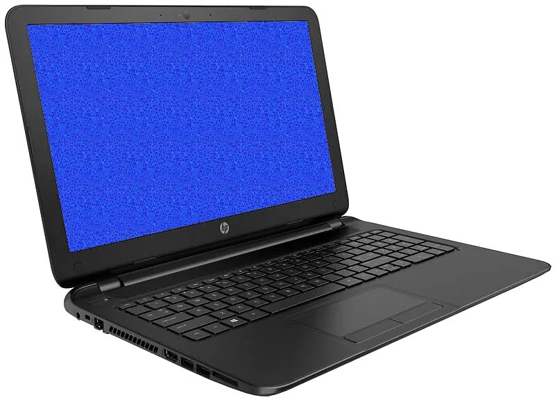
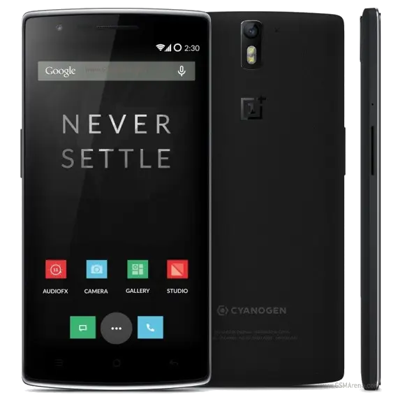

Why Computers Don't Sell

Computers don't sell because they just don't offer enough value! Computer manufacturers just don't seem to get their act together. Phones have now resolutions surpassing normal laptops despite having screens that are 10" smaller. Why on year 2015 we still have laptops with awfully glossy screen that is difficult to read even at normal office lightning at 1366x768 resolution? Those are bulky 15.6" basic laptops. And here is the thing: they are sold at the same price point as phones with full 1080p resolution and display technology paying special attention to sunlight legibility. Those phones also have multipoint touchscreens, satellite navigation, global 4G networking, whole day battery life, NFC, two capable cameras, video recording at 4K resolution, quad-core processors, 3Gb of RAM, noise-cancelling multidirection microphones, accelerometer, proximity sensor, gyroscopes, compass and you can even make phone calls with them! Did I mention they also fit into your pocket? Example device here is OnePlus One, costing 299€ for 64GB model (349€ after price hike, thanks to weak euro).

On the same price point, let's take a look at a typical laptop, a laptop with the well thought name HP 15-r067no. What do you get for the same price? Low-end dual-core processor, horribly glary 1366x768 display, 6 hours of battery, 4Gb of RAM, 500Gb 5400rpm HDD, three USB-ports, optical drive, webcam, microphone and HDMI-out. That's all, folks. It doesn't fit into your pocket, it doesn't navigate for you, you can't phone or navigate with it... it does almost nothing compared to a typical smartphone. Not very compelling, is it? Really now, who on their right mind would buy such a device? Not even having a touch-screen. If you want a somewhat modern laptop with at least good quality 1080p matte screen, prepare to shell out at least 1000€. Even then, you will get a fraction of features of a smartphone.
Finally the operating systems. Phones are easier to use, thanks to their touch-only origins and limited screen area. Then on high-end smartphones, everything happens more or less instantly. You click an application and it opens like snapping fingers. Granted, applications may not be as powerful and fully featured, but that is becoming debatable. Especially considering how they integrate to features of hardware. You simply can't snap a photo and put it on OneNote on a computer in one click. You don't get message notifications when computer is sleeping. Predicting input is not there. List goes on.
Point is, with hardware capabilities of a basic smartphone and operating systems making most out of the capabilities, you can do so much more than with a laptop, no matter how many coins you drop at laptop. And no more whirring fans when watching movies.
The only arguments left for having a laptop are proper keyboard, mouse, larger screen and applications. Last one is debatable, depending entirely on what you need to do. Furthermore bluetooth keyboards and mice work on Android phones. All that is left for traditional computers are larger screens, work ergonomics and specialist applications such as AutoCAD and Eclipse. Everything else is worse or doesn't exist. People get less value.
Looking at state of stagnant disgrace computer hardware makers have dug themselves in, it's obvious now that something has to change dramatically in the industry, lest they are really insistent on going the way of the dodo. Operating systems have to change. Hardware must change. Software must change. Everything has to change.